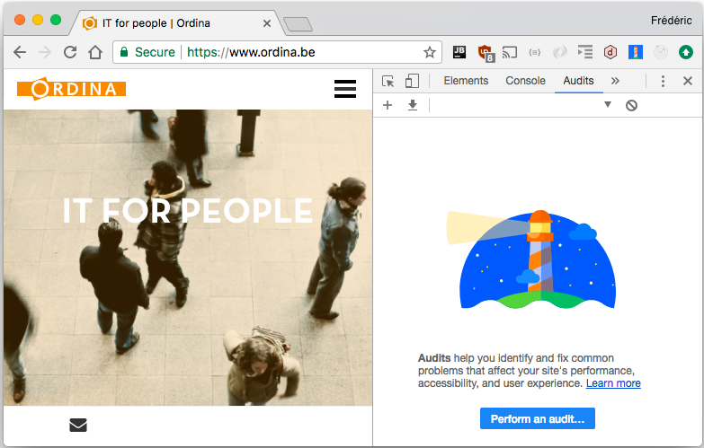
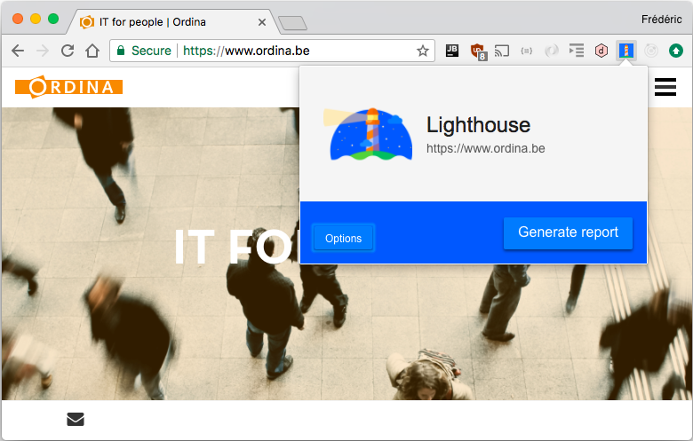
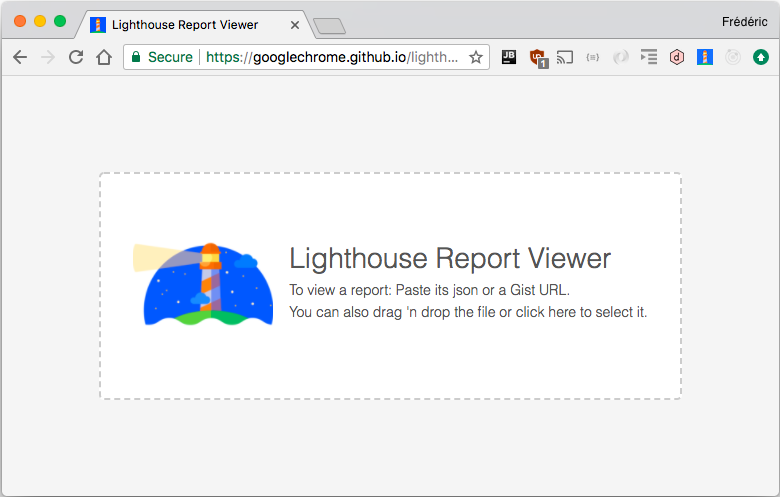

Lighthouse
Automated audits for web pages
Hi, my name is Frédéric.
Frontend Developer
Ordina Belgium
@f_ghijselinck
https://github.com/fredericghijselinck
What's Lighthouse?
Lighthouse is an open-source, automated tool for improving the quality of web pages.
You can run it against any web page, public or requiring authentication.
It has audits for performance, accessibility, progressive web apps, best practices, and more.
How to get lighthouse?
Install Chrome!
1. Run Lighthouse in Chrome DevTools
2. Run the Node command line tool
3. Run Lighthouse as a Chrome Extension
Run Lighthouse in Chrome DevTools
Chrome DevTools - Audits tab
Install and run the Node command line tool
install
npm install -g lighthouse
run
lighthouse <url>
Install and run Lighthouse as a Chrome Extension
Open the Chrome Webstore
Install Lighthouse Chrome Extension
Default audit values
- Device Emulation: Nexus 5X
- Network Throttling: 3G connection
- CPU Throttling: 4x slowdown
What will be audited?
- Progressive Web App
- Performance
- Accessibility
- Best Practices
- SEO
What's in each category?
- Failed Audits
Default open - Passed Audits
Default collapsed - Manual checks to verify
ex. Site works cross-browser
Share reports as JSON
Chrome DevTools:
Click 'Download Report'
Command line.
Run:
lighthouse --output json --output-path <path/output.json>
Chrome Extension:
Click 'Export' > 'Save as JSON'
Share reports as GitHub Gists
Chrome DevTools:
Nope :-(
Command line:
Nope :-(
Chrome Extension:
Click 'Export' > 'Open in Viewer'
In the Viewer > Click 'Share'
Lighthouse Report Viewer
https://googlechrome.github.io/lighthouse/viewer/
Demo time!
Useful links
- Lighthouse:
https://github.com/GoogleChrome/lighthouse - Lighthouse docs:
https://developers.google.com/web/tools/lighthouse/ - Lighthouse Viewer:
https://googlechrome.github.io/lighthouse/viewer/ - PWA Checklist:
https://developers.google.com/web/progressive-web-apps/checklist - Accessibility Checklist:
https://developers.google.com/web/fundamentals/accessibility/ - SEO guidelines:
https://support.google.com/webmasters/answer/35769 - Lighthouse 2.8 Updates:
https://developers.google.com/web/updates/2018/02/lighthouse
Thanks for watching!
Now kick some ass!